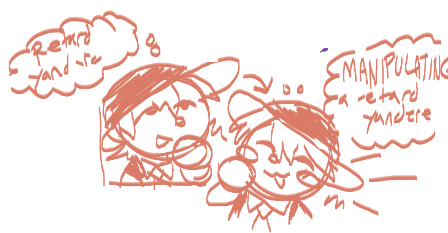
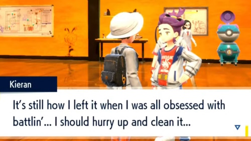
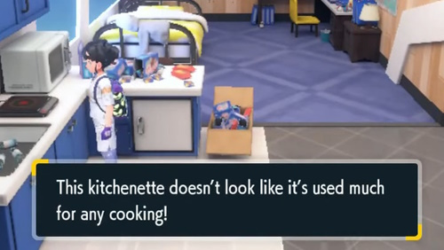
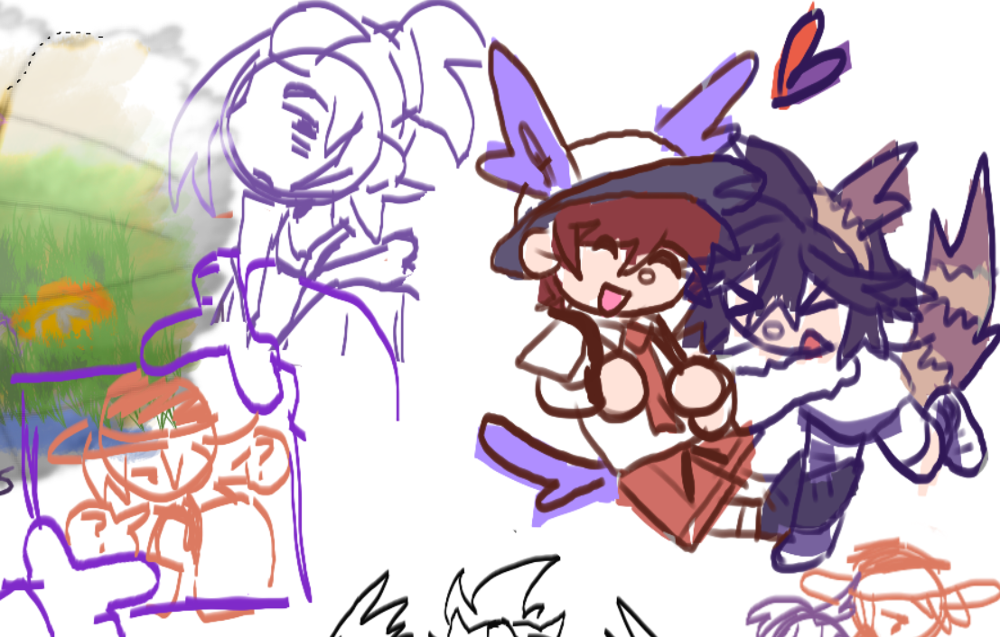
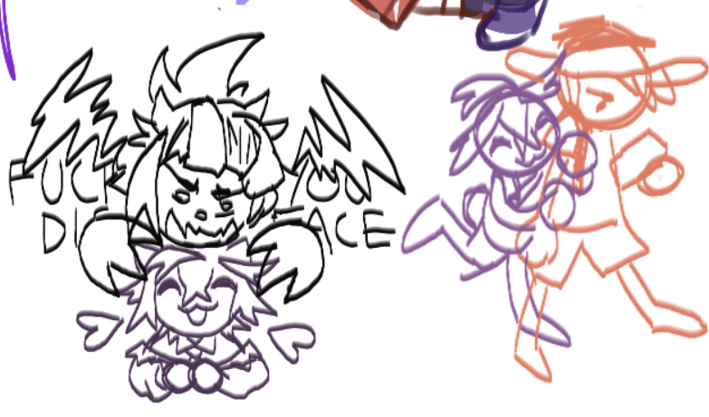
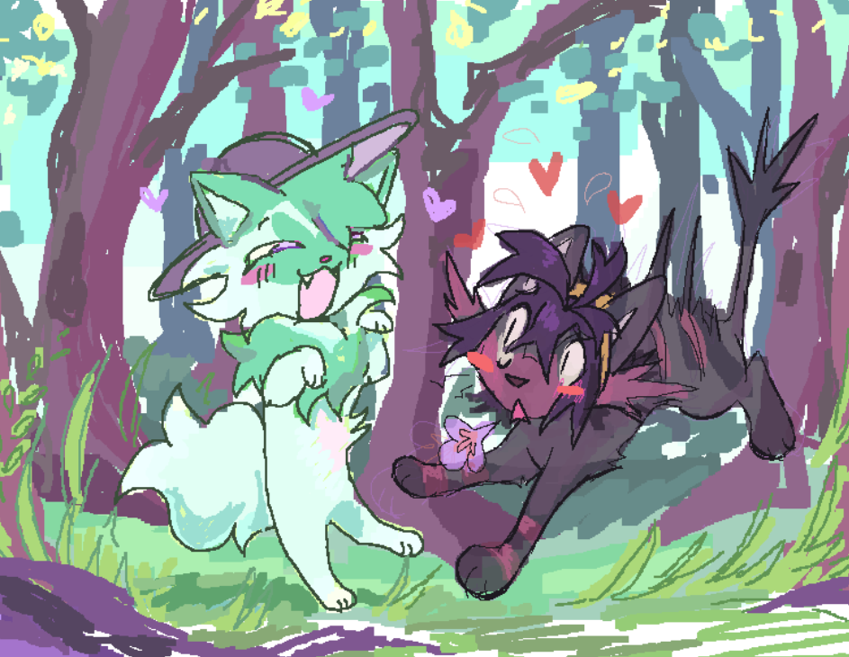

we moved webhosts on the 21st of this month from neocities over to nekoweb (which for some reason i keep calling "nekoden"). the capability to allow multiple users to edit a site feels like it was made for our site's concept, as well as the ability to register subdomains. now we each have our own urls while still keeping both sites under the main dreemurr domain! it's so perfect!
one of my biggest gripes with our setup on neocities was the resulting extremely long file names from how we both organized our sites together. for example, my main index page has transformed from "dreemurr.neocities.org/chimera/chimera" to simply "chimera.nekoweb.org". this was most egregious with various part's own assorted projects, which would have subfolders out the ass, like fen's journal being something like /chimera/fen/journal/journal.html" or something like that. it was something i couldn't sacrifice without sacrificing the (already piss-poor) organization that i have, which is necessary to keep both as a means of having two people running the site as well as various parts wanting different organizational methods and trying to keep the peace irt that.
nekoweb fixes all of these problems flawlessly, as well as just being generally nicer to use in my opinion. our neocities url will remain as a redirect to nekoweb. there will be a notice for the next few weeks, before eventually just becoming instant. the neocities site preview really bothers me, lol. i don't know why it just looks like a buggy version of the old index page and i can't seem to fix it. whatever.
i'm also giving vscode a try, and i'm surprised i haven't moved over to this editor before, honestly. as someone who's purely used notepad++ since i was ~17 for coding, it's bizarre to actually use an editor that has more features. all the keyboard shortcuts are insanely useful, as well as live preview and plugins in general. i'm hoping this will help speed up my workflow, even though i'm still prone to getting distracted as fuck.
(i proceeded to get distracted for 2 hours after i wrote that, lol.)
anyway, i wanted to share the pokemon art i made with my best friend recently. we'll probably make more, maybe i'll update this, who knows. i talked about it when i recently updated my pokemon page, but i've really, really enjoyed thinking about kieran from S/V lately - specifically sghr, the japanese ship name of him and the protagonist. i'm not really a "shipping" type of person most of the time, and i wouldn't even really consider whatever this is "shipping". the dynamic with these characters is just fascinating to me. which i guess shouldn't be surprising because Asriel Dreemurr is one of my favorite characters, and kieran's fascination with florian (the SV protagonist) is pretty similar to asriel's fascination with chara. or maybe i'm just projecting. well whatever.
the general concept of this lonely kid pining after what they percieve as something "new", "interesting", and most importantly, a universally and personally unachievable "special" is always my favorite. the contrast between that and the game's absolute refusal to let you make any choice that it doesn't want you to make in terms of how you treat kieran throughout the story makes them really fun to think about for me. how does florian feel about being forced to go along with lying to kieran? does he care? does he not? of course i can't help but view them in a sort of metafiction way...
kieran has had an interesting side effect of making me love all the characters in sv because of his influence - how they interact together, what their dynamics would be... i didn't care much for this game at all before the dlc, and especially not for the protagonists. but now the protags have gained their own sort of character in my mind, and i've grown to love the rest of the cast, too.

sorry for the slur. but it's what they are to me.
'cause of this i really just love kieran in general, of course. something i found out recently is that in the original japanese text of the game, during his monologue to you before his champion fight in indigo disc, they actually toned down one of his lines in the english localization. in japanese, he says "吐くほど 勉強て ポケモン 強くして..." - it basically translates to "I studied so hard that I threw up just to make my Pokemon become stronger."
whenever they translated this into english, they dropped out the detail of him studying so hard that he was throwing up. they translated it as simply "I put everything into studying and making my Pokemon stronger..." while I understand why NOA would shy away from it, i really love just how disordered kieran becomes in his downward obsessive spiral to become something "special" and defeat the protagonist. without this bluntness i feel like you lose something. also, i like this detail in particular because if you look at kieran's dorm room, you can see that his sweet tooth developed into what looks like an unhealthy habit of only eating garbage while he pushed himself to study.
 
he becomes deadset on trying to work to become just like florian, and it's reflected even in his design change... gahhhhh i love these characters--
i probably have more to say but i got distracted for hours in the middle of this, so i'm just gonna drop the art and run. thanks for reading!
 

This one was a collab between coda and i... the only part i did was the kieran litten.